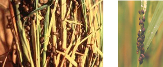
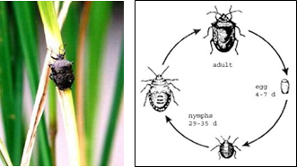

PESTS OF RICE :: Major Pests :: Rice Black Bug
7. Rice black bug: Scotinophora lurida and S. coarctata (Podopidae: Hemiptera)
Distribution and Status: India
ETL: 10% damage at tillering stage or 5 bugs / hill |
 |
Bug Burn (PhilRice)
|
|
 |
|
Bionomics of Rice Black Bug |
Bionomics: Adults are brownish black with a prominent scutellum and pronotum having a spine on either side. 1 mm long greenish eggs are laid in masses on the stem and leaves that turn pinkish during hatching. Brown nymphs with yellowish green abdomen and 2-3 black scent glands.
Management
1. Keep the field free from weeds and grasses.
2. Drain the excess water from the field.
3. Set up light traps to attract and kill large number of bugs.
4. Conserve the predators viz., spiders, coccinellids and wasps to check the pest.
5. Ducks can be allowed in the field to pick up the bugs